Minecraft Beta 1.5_02
New things since last version:
Weather has been added, including Rain, Snow, and Thunder, Creepers become Charged when struck by lightning, Pigs become Zombie Pigmen When struck by lightning, Achievements, Statistics, Shift Clicking into Chests, Killing Pigs with fire cooks the meat,
Many Gameplay Changes and Bug fixes...
Blocks in this Version:
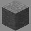
 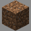
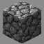
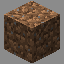
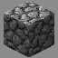
 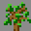
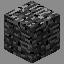
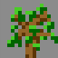
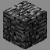
 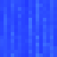
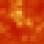
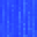
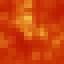
 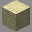
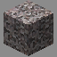
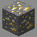
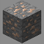
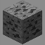
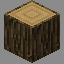
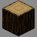
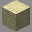
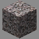
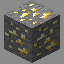
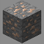
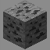
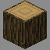
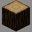
 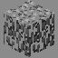
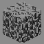
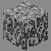
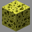
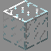
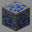
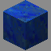
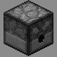
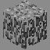
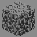
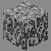
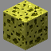
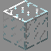
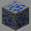
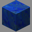
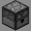
 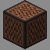
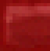
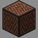
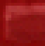
 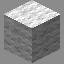
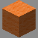
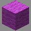
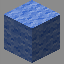
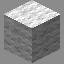
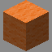
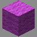
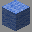
 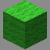
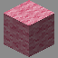
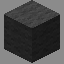
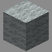
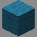
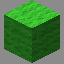
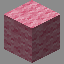
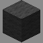
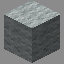
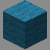
 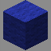
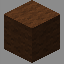
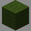
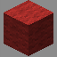
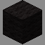
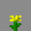
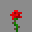
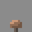
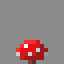
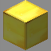
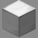
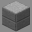
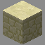
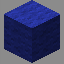
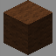
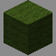
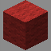
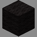
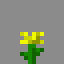
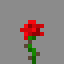
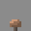
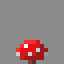
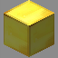
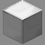
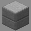
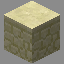


Items in this Version:


Mobs in this Version:
Creeper (Can be charged by lightning), Skeleton, Zombie, Spider, Giant, Slime, Ghast, Zombie Pigman
Pig (lightning turns into zombie pigman), Sheep (Dyeable), Cow, Chicken, Squid, Wolf